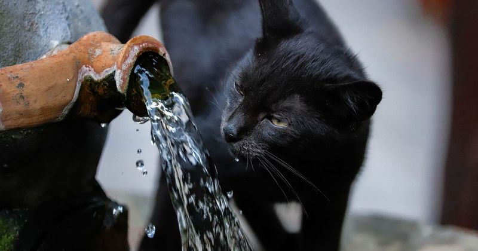
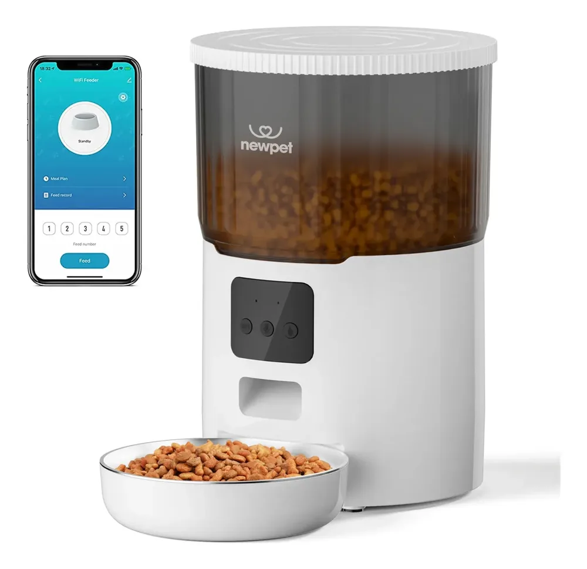

Comedouro e Bebedouro Automático: Precisa dos Dois? 2 em 1 ou Separados (4 Combos com Preço)
Publicado em 20 de agosto de 2026 · Atualizado em 22 de novembro de 2026 · Por Nildo Alves, curadoria de produtos pet no Smart Pet Gadgets · Leitura: 9 min

Este post contém links de afiliado. Podemos receber uma comissão em compras feitas através deles, sem custo adicional para você.
Resposta curta: comedouro e bebedouro automático resolvem problemas diferentes. O comedouro controla horário e porção da ração; o bebedouro (fonte) mantém a água limpa e em movimento, o que ajuda o gato a beber mais. Os dois juntos valem para quem passa o dia fora, para gato que bebe pouco e para casa com mais de um pet. O jeito mais barato é um 2 em 1 por gravidade (R$ 92,90), mas ele não controla porção. A combinação com melhor custo-benefício que encontramos é o comedouro Newpet 4L com uma fonte inox de 3 L: R$ 354,80 no Mercado Livre (21/11/2026).
Comedouro Newpet 4L: app, porções de 5 g e pilha reserva, nota 4,9. É a base do combo custo-benefício.Link de afiliado — sem custo extra para você.
Ração no horário e na quantidade certa quando você não está
Água limpa, filtrada e em movimento, que estimula o pet a beber
Programação
Horários e porções (elétrico) ou nenhuma (gravidade)
Nenhuma: a água fica disponível o tempo todo
Energia
Tomada, com ou sem pilha reserva; gravidade não usa
Tomada ou bateria; se a bomba para, a água continua na bandeja
Manutenção
Limpar reservatório e tigela toda semana
Completar a água a cada poucos dias, limpar a bomba toda semana, trocar o filtro a cada 2 a 4 semanas
Preço no Mercado Livre
R$ 54 (gravidade) a mais de R$ 1.000 (Wi-Fi com balança)
R$ 42 a cerca de R$ 230
Quem mais precisa
Tutor que passa o dia fora; pet que come rápido ou precisa de dieta
Gato, principalmente com ração seca ou que bebe pouco
Se Só Puder Comprar Um: Comece Pela Água ou Pela Ração?
A água é mais crítica que a comida: o pet aguenta bem menos tempo sem beber do que sem comer. Mas uma tigela grande, lavada e trocada todo dia, já resolve a água de graça. Por isso a escolha depende do problema que você tem:
Gato que bebe pouca água: comece pela fonte. Gatos têm baixa sede natural, e a baixa ingestão está ligada a cálculos urinários e problemas renais. A referência usada por veterinários é de cerca de 60 ml de água por kg por dia, segundo o material do projeto Felinamente, da UFPel. Para um gato de 4 kg, isso dá perto de 240 ml.
Você passa o dia fora ou o pet come rápido: comece pelo comedouro programável, que divide a ração em várias refeições e evita jejum longo. Veja se ele vale a pena para a sua rotina.
Cachorro: o comedouro costuma fazer mais diferença. Cães bebem bem em tigela comum, desde que seja grande e esteja sempre cheia.
2 em 1, Kit ou Separados: Os 3 Formatos
Formato
Como funciona
A favor
Contra
Para quem
2 em 1 por gravidade
Uma base com reservatório de ração e garrafa de água que descem conforme o pet consome
O mais barato (R$ 90 a R$ 110), sem energia, ocupa pouco espaço
Não controla porção; costuma ter só 1 L de água
Gato ou cão pequeno que não é guloso; ausência de até um dia
Kit de gravidade com bandeja
Comedouro e bebedouro de galão separados, sobre a mesma bandeja (o tipo que pet shops vendem como "kit")
Mais capacidade de cada lado; sem energia
Também não controla porção; a água fica parada
Cães que comem só o que precisam
Elétricos separados
Comedouro programável e fonte com filtro, cada um no seu lugar
Porção controlada, água filtrada em movimento, dá para afastar a água da comida
Mais caro (a partir de uns R$ 350 o par) e depende de tomada ou pilha
Quem passa o dia fora, gato que bebe pouco, mais de um pet
Um ponto que pesa contra o 2 em 1 para gatos: ele deixa a água colada na comida, e muitos gatos preferem beber longe de onde comem. Com aparelhos separados, você escolhe onde colocar cada um.
4 Combos Prontos, do Mais Barato ao Mais Completo
Preços consultados no Mercado Livre em 21/11/2026, com entrega a partir do Brasil. Os produtos estão em anúncios separados, então confira cada link antes de comprar.
Combo 2 — Melhor custo-benefício: Newpet 4L + fonte inox 3 L (R$ 354,80)
Porção controlada pelo app e água filtrada em movimento, cada um no seu lugar. É o combo que recomendamos para a maioria dos gatos e cães pequenos ou médios.

Comedouro
Comedouro Automático Newpet 4L com Voz e App (NP999)
4 L; de 1 a 40 porções de cerca de 5 g por refeição, pelo app (Wi-Fi 2,4 GHz)
3 pilhas D como reserva se faltar luz (não inclusas); gravação de voz de 12 s
Loja oficial New Pet, entrega Full; nota 4,9 com 208 avaliações
Contras: um comprador relata que precisa religar o aparelho depois de queda de energia quando está sem pilhas; tigela de plástico
Use esta tabela para conferir se o combo aguenta o seu pet entre uma reposição e outra. A água segue a referência de cerca de 50 a 60 ml por kg por dia; a ração é um exemplo, porque varia pela marca (use a tabela da embalagem).
Pet
Água por dia
Ração por dia (exemplo)
1 L de água (2 em 1) dura
3 L de água (fonte) dura
Gato de 4 kg
200–240 ml
~60 g
~4 dias
~12 dias
Cão de 10 kg
500–600 ml
~180 g
~2 dias
~5 dias
Cão de 30 kg
1,5–1,8 L
~400 g
Menos de 1 dia
~2 dias
Calor, ração seca e exercício aumentam a sede. Ração úmida reduz. A fonte também perde água por evaporação, então complete antes de esvaziar.
Onde Colocar o Comedouro e o Bebedouro
Água longe da comida, para gatos. Muitos gatos bebem mais quando a água fica a um ou dois metros do comedouro, ou em outro cômodo. Para cães, lado a lado costuma funcionar.
Longe da caixa de areia. Nenhum gato gosta de comer ou beber perto dela.
Perto de tomada, mas fora do caminho. Cabo esticado vira brinquedo e tropeço. Fontes sem fio resolvem cantos sem tomada.
Piso firme e plano. Comedouro por gravidade tombado espalha a ração toda de uma vez.
Queda de luz. Se o comedouro tem pilha e a fonte não, a ração continua saindo mas a água para de circular. Ela continua na bandeja, mas em dias quentes deixe um pote extra.
Manutenção: O Que Cada Um Exige
Bebedouro (fonte)
Complete a água a cada poucos dias e troque toda de uma vez pelo menos uma vez por semana. Desmonte e escove a bomba e a bandeja toda semana: uma camada viscosa (biofilme) se forma nos cantos, mesmo com a água em movimento. O filtro de carvão costuma durar de 2 a 4 semanas; siga o prazo do fabricante.
Comedouro
A gordura da ração gruda no reservatório e no mecanismo de saída. Lave a tigela a cada poucos dias e o reservatório toda semana, sempre bem seco antes de reabastecer, para não criar fungo nem empelotar a ração. Veja o passo a passo em como limpar o comedouro automático.
Gato x Cachorro: O Que Muda
Gatos se beneficiam mais da fonte: preferem água corrente, bebem pouco por natureza e costumam gostar de bebedouros largos e rasos, que não encostam no bigode. Do lado da comida, o comedouro programável ajuda gatos que pedem comida de madrugada ou comem rápido demais.
Cães se viram bem com tigela comum de água, desde que grande e sempre cheia. O comedouro faz mais diferença, principalmente para cão grande (capacidade) ou que devora a ração (porção). A diferença entre os modelos para cada espécie está em comedouro para gato x cachorro.
E Para Viajar?
Comedouro e bebedouro automático garantem comida e água por vários dias, mas não substituem uma visita a cada 24 horas. O PetMD fala em 8 a 12 horas sozinho para um gato adulto saudável. Veja quanto tempo é seguro e o que levar em conta no guia de comedouro automático para viagem.
Como Escolhemos
Montamos os combos com produtos que têm entrega a partir do Brasil no Mercado Livre e que já comparamos nos nossos rankings de comedouro, bebedouro e viagem. Os critérios foram: se o comedouro controla a porção, o que acontece se faltar luz, quantos litros de água e de ração cabem, nota e número de avaliações, e loja oficial ou vendedor MercadoLíder. Os dados vêm dos anúncios entre 14 e 21/11/2026; não testamos os aparelhos em casa. Veja nossa política editorial.
Perguntas Frequentes
Preciso ter comedouro e bebedouro automático?
Não obrigatoriamente. Eles resolvem problemas diferentes: o comedouro controla horário e porção da ração; o bebedouro mantém a água limpa e em circulação. Ter os dois faz sentido para quem passa o dia fora, para gato que bebe pouca água e para casa com mais de um pet. Para quem fica em casa e troca a água todo dia, um dos dois costuma bastar.
Comedouro e bebedouro 2 em 1 vale a pena?
Vale para gato ou cão pequeno que come só o que precisa, em ausências de até um dia. É o jeito mais barato de ter os dois (R$ 92,90 no Mercado Livre em 21/11/2026) e não usa energia. Mas não controla porção, e o lado da água costuma ter só 1 litro, pouco para cão médio ou grande.
Se eu só puder comprar um, comedouro ou bebedouro automático?
Depende do problema. Se o gato bebe pouca água, comece pela fonte, que custa a partir de cerca de R$ 100. Se o problema é horário e quantidade de ração porque você passa o dia fora, comece pelo comedouro. Em qualquer caso, deixe uma tigela de água limpa e grande: a água é mais crítica que a ração.
Bebedouro automático substitui a troca diária de água?
Não totalmente. A fonte filtra e movimenta a água, mas o reservatório precisa ser completado a cada poucos dias, a bomba e a bandeja precisam de limpeza semanal e o filtro deve ser trocado a cada 2 a 4 semanas, conforme o fabricante.
Posso colocar o comedouro e o bebedouro lado a lado?
Para cães, em geral não há problema. Muitos gatos preferem a água longe da comida, então vale afastar a fonte um ou dois metros do comedouro ou colocá-la em outro cômodo. Se o gato bebe pouco, teste mudar a fonte de lugar antes de trocar de modelo.
Com comedouro e bebedouro automático posso deixar o pet sozinho vários dias?
Não. Os dois garantem comida e água por vários dias, mas o pet precisa de alguém passando em casa a cada 24 horas para conferir o próprio animal, a caixa de areia e se os aparelhos estão funcionando. O PetMD fala em 8 a 12 horas sozinho para um gato adulto saudável.
Conclusão
Comedouro e bebedouro automático não competem entre si: um cuida da ração, o outro da água. Se o orçamento é curto, o 2 em 1 por gravidade resolve o básico por menos de R$ 100, desde que o pet não seja guloso. Para controlar porção e manter a água filtrada, o combo Newpet 4L + fonte inox 3 L é o que entrega mais pelo preço. E se só der para comprar um agora, lembre: gato que bebe pouco pede fonte primeiro; tutor que passa o dia fora pede comedouro primeiro.
Link de afiliado: podemos receber uma comissão por compras feitas através deste link, sem custo adicional para você.
NA
Nildo Alves — curadoria de produtos pet no Smart Pet Gadgets. Pesquisa e compara produtos para cães e gatos, cruzando especificações de fabricante com boas práticas veterinárias e dados de mercado.